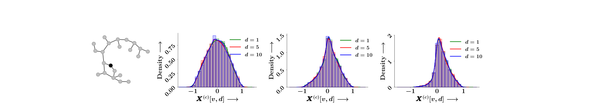
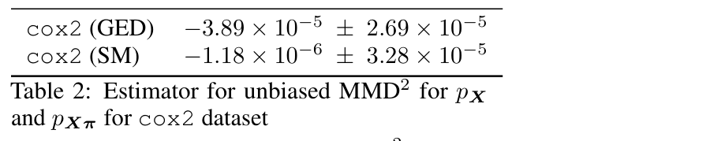
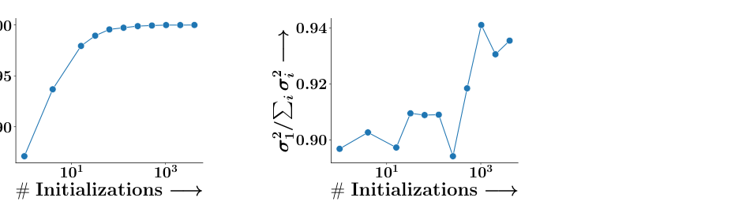
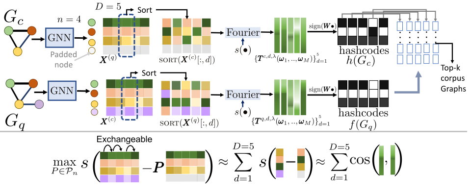
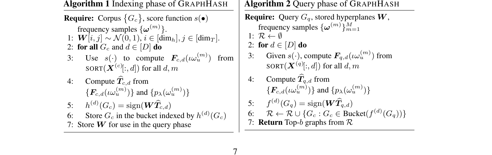
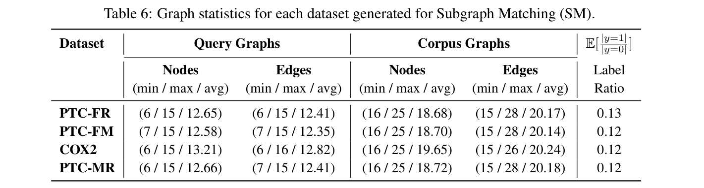
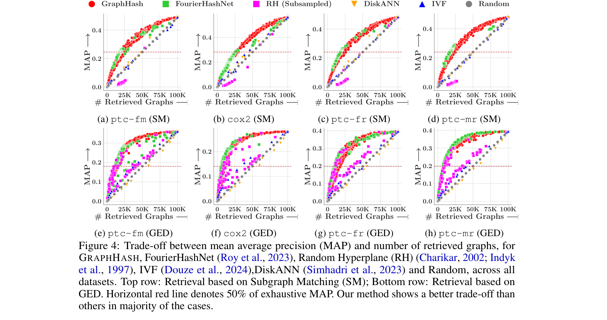
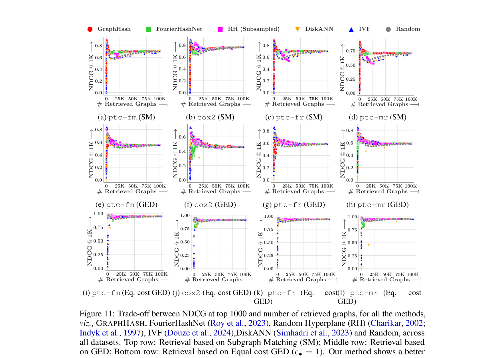

Exchangeability of GNN Representations
with Applications to Graph Retrieval
We discover a probabilistic symmetry hidden in trained graph neural networks: under standard initialization and training, the per-dimension components of node embeddings are exchangeable random variables. This single property collapses costly transportation-based graph similarity into a sorted-vector Euclidean similarity, giving the first unified locality-sensitive hashing framework for diverse graph retrieval tasks.
Motivation
Symmetries in neural networks have largely been studied algebraically — the invariance of an MLP's output under simultaneous permutations of its weight matrices, for instance. These symmetries are typically treated in isolation from the training process. We ask a different question: are there probabilistic symmetries that emerge naturally during the standard training of a GNN, induced by random initialization itself?
The answer turns out to be yes — and the structure it exposes has direct, far-reaching consequences for scalable graph retrieval. Across a wide variety of message-passing architectures (GCN, GAT, GIN, gated GNN, graph transformers) and standard optimizers (SGD, Adam), the columns of the learned embedding matrix are exchangeable, where the randomness is induced by the model initialization.
Problem Setup
Given a graph $G = (V, E)$ with $|V| = n$, a graph neural network with parameters $\theta$ computes a node embedding matrix $X = [\mathbf{x}(u)]_{u \in [n]} \in \mathbb{R}^{n \times D}$, where $D$ is the embedding dimension. Parameters are initialized i.i.d. (e.g., Kaiming or Xavier) and trained by a gradient-based optimizer on a permutation-invariant loss.
For graph retrieval, given a query graph $G_q$ and a corpus $\mathcal{C} = \{G_c\}$, we seek the top-$b$ corpus graphs most relevant to $G_q$. State-of-the-art relevance is captured by a unified transportation-based distance, decomposable across embedding dimensions:
\[ \Delta(G_c, G_q) = \min_{P \in \mathcal{P}_n} \sum_{u, u'} \sum_{d \in [D]} \rho\!\left(\mathbf{x}^{(q)}(u)[d] - \mathbf{x}^{(c)}(u')[d]\right) \cdot P[u, u'], \]where $\rho$ is convex and possibly asymmetric. Setting $\rho(\cdot) = [\cdot]_+$ recovers the hinge distance for subgraph isomorphism; $\rho(\cdot) = e_\ominus[\cdot]_+ + e_\oplus[-\cdot]_+$ recovers asymmetric graph edit distance. The catch: computing $\Delta$ exactly is $\mathcal{O}(n^3)$ and Sinkhorn approximations are $\mathcal{O}(n^2)$ — neither fits any standard index.
Exchangeability of GNN Representations
Before we use it, let us take a careful look at what exchangeability of GNN embeddings actually says, why it holds, and how far it travels. The story has three parts: a precise definition, a four-step argument that turns a property of i.i.d. initialization into a property of trained models, and a discussion of how restrictive the assumptions really are.
What exchangeability says
Random vectors $Y_1, \dots, Y_D \in \mathbb{R}^n$ are exchangeable if for every permutation $\pi : [D] \to [D]$, the joint density satisfies $p_{Y_1, \dots, Y_D}(y_1, \dots, y_D) = p_{Y_{\pi(1)}, \dots, Y_{\pi(D)}}(y_1, \dots, y_D).$ Reordering the indices does not change the joint distribution.
For a trained GNN, the random vectors of interest are the columns of the embedding matrix $X = \text{GNN}_\theta(G) \in \mathbb{R}^{n \times D}$ — i.e., one $\mathbb{R}^n$ vector per embedding dimension. The randomness is induced by the random initialization of the parameters $\theta$. The claim is that these $D$ columns are exchangeable: shuffling them around does not change the joint distribution we get when we average over training runs with different seeds.
Two things are worth pulling apart, because they are easy to conflate:
At initialization, all $D$ embedding dimensions are drawn from the same distribution. Training does not "break" this symmetry, because the loss does not care which dimension is which. So the dimensions remain interchangeable throughout training.
$p(X) = p(X\pi)$ for every permutation matrix $\pi \in \mathcal{P}_D$. The randomness is over initializations, not over data. Two embedding dimensions are not the same vector — but their joint distribution is invariant under reordering.
Two notes on what this is not. First, exchangeability does not say that two dimensions of the same trained model are equal. They are typically different vectors. It says that if you train many independent GNNs and look at the empirical density across runs, you get the same density for every dimension — and the same joint density for every reordering. Second, exchangeability is a probabilistic symmetry, distinct from the algebraic permutation symmetries of weight matrices that have been studied since Hecht-Nielsen (1990). Algebraic symmetry is about a single trained model; probabilistic symmetry is about the distribution of trained models.
Why it holds — a four-step argument
The core observation is simple, but turning it into a proof for arbitrary GNN architectures takes care. The argument in Section 3 of the paper has four steps. The first three are technical lemmas; the fourth is the main theorem.
Warm-up: a 2-layer MLP. Consider the map $\mathbf{x} = \sigma(\sigma(\text{feat}\cdot\Psi)\Theta)$. To reorder the columns of $\mathbf{x}$ by a permutation $\pi$, simply right-multiply $\Theta$ by $\pi$: $\Theta \mapsto \Theta\pi$ produces $\mathbf{x} \mapsto \mathbf{x}\pi$. The map $\Gamma_\pi(\theta) := \theta \cdot \mathrm{Diag}(I, \pi)$ is the parameter-side bijection that induces this output permutation. Because $\Theta$ is initialized i.i.d., $p(\Theta) = p(\Theta\pi)$, so $p(\mathbf{x}) = p(\mathbf{x}\pi)$ at $t = 0$. The whole argument extends this single observation through the full training trajectory of a GNN.
The structure of the argument is general: any time you have (i) i.i.d. initialization, (ii) a loss invariant under a group action on intermediate representations, and (iii) a gradient-based optimizer, you get exchangeability of those representations under that group. GNNs are an instance of this template; CNNs and MLPs are others (independently noted in contemporaneous work).
Three consequences worth pausing on
The theorem is stated as a distributional statement, but it has concrete fingerprints that are useful both as sanity checks and as engineering tools. Each consequence below corresponds to a specific empirical test that the paper performs on the cox2 dataset, training 5,000 independent GNNs and looking at what the symmetry actually does in practice.
Consequence 1 — Identical marginals across embedding dimensions
The most direct fingerprint: each component $\mathbf{x}(u)[d]$ should have the same marginal density across $d \in [D]$. To test this, the authors fix a corpus node $v$ in cox2, train 5,000 GNNs from scratch with different random seeds, and for each model record the scalar value $X^{(c)}[v, d]$ for $d \in \{1, 5, 10\}$. The histogram across seeds is the empirical density for that dimension. If exchangeability holds, these three histograms should overlap.

Consequence 2 — A direct distributional test via MMD
Identical marginals are necessary but not sufficient for exchangeability — two different joint distributions can share marginals. The authors therefore run a stronger test: estimate the maximum mean discrepancy (MMD$^2$) between the empirical distribution of $X$ and that of $X\pi$ across 100 random permutations $\pi$. If the two distributions agree, MMD$^2$ should be near zero (and is allowed to go slightly negative, since the unbiased estimator can underestimate).

Consequence 3 — The expected embedding matrix is rank one
A more surprising fingerprint follows from identical marginals plus exchangeability of joint columns: $\mathbb{E}[X]$ has all columns equal, so it is a rank-one matrix. To test this, compute the SVD of the empirical sample mean $\frac{1}{R}\sum_{r=1}^R X^{(r)}$ over $R$ independently trained models, and track the ratio $\sigma_1^2 / \sum_i \sigma_i^2$ — the fraction of total variance captured by the leading singular value. If $\mathbb{E}[X]$ truly is rank one, this ratio should converge to 1 as $R$ grows.

Consequence 4 — Per-dimension scoring is unbiased (the engineering hook)
The last consequence is what powers the GraphHash pipeline. Because dimensions are identically distributed, the score $\text{sim}_d(G_c, G_q)$ computed in any single dimension $d$ is an unbiased estimate (up to scaling) of the full $D$-dimensional transportation score. Aggregating per-dimension estimates therefore approximates the full cost. This is the formal hook that lets the next section replace optimal transport with sorting — a sublinear-time operation that fits cleanly into a locality-sensitive hash.
The GraphHash Pipeline
Our framework GraphHash turns the intractable transportation problem into a sequence of indexable operations, end to end:

Core Components
1Exchangeability of GNN Embeddings
A sequence of random vectors $Y_1, \dots, Y_D \in \mathbb{R}^n$ is exchangeable if its joint density is invariant under any permutation of indices: $p(Y_1, \dots, Y_D) = p(Y_{\pi(1)}, \dots, Y_{\pi(D)})$ for all $\pi$. Our main result establishes exchangeability for the columns of the embedding matrix.
Under (i) i.i.d. initialization within each layer, (ii) a permutation-invariant loss, and (iii) a gradient-based optimizer (SGD, Adam, ...),
\[ p(X) = p(X \pi) \quad \text{for all permutation matrices } \pi, \]where the randomness is induced by the random initialization. The result extends to joint distributions over query–corpus pairs: with $Y = [X^{(q)}; X^{(c)}]$, $p(Y) = p(Y \pi)$.
A direct consequence: the components $\mathbf{x}(u)[1], \dots, \mathbf{x}(u)[D]$ are identically distributed. Across many random seeds, the expected embedding matrix $\mathbb{E}\big[[\mathbf{x}(u)]_{u \in V}\big]$ collapses to a rank-one matrix — an observation aligned with recent rank-collapse findings in transformers and SSMs.
2Transport → Sorted-Vector Euclidean Similarity
Exchangeability implies the $D$ embedding coordinates are identically distributed, so each dimension yields a concentrated estimate of the full transportation similarity. Aggregating per-dimension estimates approximates the full $D$-dimensional cost. For a single dimension $d$, the transportation problem reduces to optimal transport between scalars — solved exactly by sorting:
\[ \mathrm{sim}_d(G_c, G_q) = s\!\left( \mathrm{SORT}(X^{(q)}[:, d]) \;-\; \mathrm{SORT}(X^{(c)}[:, d]) \right), \]where $s(\cdot) = \rho_{\max} - \rho(\cdot)$ is the corresponding score. A problem with no good index becomes a Euclidean similarity over fixed-length sorted vectors.
3GraphHash: a unified LSH framework
Once the score is Euclidean on sorted-embedding columns, classical LSH applies. Building on the Fourier-feature LSH construction of Roy et al. (2023), we embed order-statistics vectors via random Fourier features and bucket by sign:
// GraphHash: indexing a corpus graph G_c
X = GNN_θ(G_c)
for d in range(D):
v_d = SORT(X[:, d]) // per-dim order statistics
φ_d = fourier_features(v_d, ω) // random Fourier projection
h_d = sign(φ_d @ R) // sign hash
bucket(G_c) = concat(h_1, ..., h_D)We prove this is a valid LSH for the original transportation-based graph similarity, working uniformly across hinge similarity (subgraph matching), asymmetric GED, and other decomposable transportation distances. To our knowledge this is the first principled LSH for asymmetric transportation-based graph similarity.

Experimental Findings
The experimental section evaluates GraphHash on four real-world TU benchmark datasets, against five competitive indexing baselines, under two distinct supervision signals, and on two complementary retrieval metrics. The setup is summarised below; full details are in Section 5 of the paper.

MAP vs. retrieval budget

Robustness across metrics and hyperparameters
A single MAP curve can hide failure modes — a method might lift average precision while ranking the very best candidates poorly. To check for that, the paper repeats the comparison under NDCG, a position-sensitive metric, and adds a third supervision signal (equal-cost GED, where insertion and deletion costs are both 1).

A second axis: the hashcode dimension $\dim_h$ controls the bit-budget of the LSH. Too few bits collapse everything into a single bucket; too many fragment the corpus and inflate the candidate set. The paper sweeps $\dim_h$ and tracks the area under the MAP-vs-budget curve (AUC) — a single scalar summarising the whole accuracy–efficiency trade-off.
Contact
If you have questions or suggestions, please reach out to any of the authors.